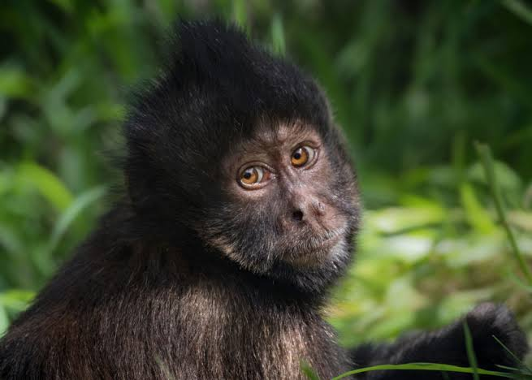

Did You Know?
Monkeys are intelligent, playful, and full of surprises! Here are 50 fun facts to enjoy.
1. Monkeys use vocalizations, facial expressions, and body language to communicate.
2. Some monkeys, like the capuchin, use tools to get food—such as cracking nuts with rocks!
3. The golden lion tamarin is one of the most endangered monkey species.
4. Monkeys can laugh—some researchers have observed their chuckles during playtime.
5. Chimpanzees, which are closely related to monkeys, can recognize themselves in mirrors.
6. The smallest monkey in the world is the pygmy marmoset, which can fit in the palm of your hand.
7. Howler monkeys are one of the loudest land animals—they can be heard up to 3 miles away!
8. Some monkeys have prehensile tails, meaning they can use their tail like a fifth limb to grab objects.
9. The proboscis monkey has an unusually large nose, which helps amplify its calls.
10. Spider monkeys have long limbs and tails that help them swing effortlessly through trees.
11. Some monkeys have padded bottoms, called ischial callosities, to help them sit comfortably on branches.
12. Japanese macaques, also known as snow monkeys, enjoy relaxing in hot springs during winter.
13. Monkeys have unique fingerprints, just like humans!
14. The mandrill is the largest monkey species and has vibrant facial coloring.
15. Squirrel monkeys have brains that are twice as large (in proportion to body size) as human brains!
16. Some monkeys use medicinal plants to treat parasites and infections.
17. Gelada monkeys, also called "bleeding-heart monkeys," have red patches on their chests.
18. Many monkey species live in large troops, with social bonds being crucial for survival.
19. Langur monkeys are considered sacred in India and are often seen near temples.
20. The patas monkey is one of the fastest primates, capable of running up to 34 mph (55 km/h)!
21. Some monkeys rub millipedes on their fur to repel mosquitoes.
22. Night monkeys, also called owl monkeys, are the only truly nocturnal monkeys.
23. Capuchins have been trained to assist humans with disabilities due to their intelligence.
24. Howler monkeys sleep for up to 15 hours a day!
25. Some monkeys live in mangrove forests, adapting to an aquatic environment.
26. Monkeys are excellent problem-solvers and can learn patterns and sequences.
27. The bonnet macaque has a distinctive tuft of hair on its head that resembles a bonnet.
28. Some monkeys use leaves as umbrellas during heavy rain.
29. Titi monkeys are known for their strong pair bonds—they even intertwine their tails!
30. Monkeys have been observed washing their food before eating.
31. Colobus monkeys lack thumbs but have strong gripping fingers.
32. Some monkeys enjoy grooming each other, which strengthens social bonds.
33. The bald uakari’s red face is a sign of good health.
34. Some monkeys have cheek pouches where they store food for later.
35. Macaque monkeys are highly adaptable and live in diverse habitats.
36. Some monkeys engage in “play fighting” to practice self-defense.
37. Baby dusky leaf monkeys are born with bright orange fur.
38. Some monkeys whistle to communicate with their troop.
39. Gelada monkeys use complex facial expressions to express emotions.
40. Some monkeys share food with others to build friendships.
41. The blue monkey has a striking bluish-gray coat.
42. Monkeys can recognize different individuals within their troop.
43. Golden snub-nosed monkeys thrive in cold mountainous regions.
44. Some monkeys mimic human behaviors when living near urban areas.
45. White-faced capuchins are among the smartest monkey species.
46. Monkeys can be found in over 90 countries around the world.

47. De Brazza’s monkey is known for its white beard and wise appearance.
48. Some monkeys have been trained to help with scientific experiments.
49. Hamadryas baboons live in large, hierarchical social groups.
50. Monkeys can learn sign language and communicate with humans!